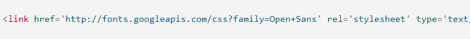

Введение в CSS!
Основы CSS
CSS (Cascading Style Sheets) — это код, который вы используете для стилизации вашей веб-страницы. Основы CSS помогут вам понять, что вам нужно для начала работы. Мы ответим на такие вопросы как: Как сделать мой текст черным или красным? Как сделать так, чтобы контент появлялся в определённом месте на экране? Как украсить мою веб-страницу с помощью фоновых изображений и цветов?
Так что же такое CSS?
Как и HTML, CSS на самом деле не является языком программирования. Это не язык разметки - это язык таблицы стилей. Это означает, что он позволяет применять стили выборочно к элементам в документах HTML. Например, чтобы выбрать все элементы абзаца на HTML странице и изменить текст внутри них с чёрного на красный, вы должны написать этот CSS:
Давайте попробуем: вставьте эти три строки CSS в новый файл в ваш текстовый редактор, а затем сохраните файл как style.css в вашей папке styles. Но нам всё равно нужно применить CSS к нашему HTML документу. В противном случае, CSS стиль не повлияет на то, как ваш браузер отобразит HTML документ. (Если вы не следили за нашим проектом, то прочитайте раздел Работа с файлами и Основы HTML, чтобы узнать, что вам нужно сделать в первую очередь.)
Откройте ваш файл index.html и вставьте следующую строку куда-нибудь в шапку, между
и тегами:Сохраните index.html и загрузите его в вашем браузере. Вы должны увидеть что-то вроде этого:
Если текст вашего абзаца теперь красный, примите наши поздравления! Вы написали свой первый успешный CSS!
Анатомия набора правил CSS
Давайте взглянем на вышеупомянутый CSS немного более подробно:

Вся структура называется набором правил (но зачастую для краткости "правило"). Отметим также имена отдельных частей:
Селектор (Selector)
Имя HTML-элемента в начале набора правил. Он выбирает элемент(ы) для применения стиля (в данном случае, элементы p ).
Для стилизации другого элемента, просто измените селектор.
Объявление (Declaration)
Единственное правило, например color: red; указывает, какие из свойств элемента вы хотите стилизовать.
Свойства (Properties)
Способы, которыми вы можете стилизовать определённый HTML-элемент (в данном случае, color является свойством для элементов <p>).
В CSS вы выбираете, какие свойства вы хотите затронуть в вашем правиле.
Значение свойства (Property value)
Справа от свойства, после двоеточия, у нас есть значение свойства, которое выбирает одно из множества возможных признаков для данного свойства
(существует множество значений color, помимо red).
Обратите внимание на важные части синтаксиса:
1. Каждый набор правил (кроме селектора) должен быть обёрнут в фигурные скобки ({}).
2. В каждом объявлении необходимо использовать двоеточие (:), чтобы отделить свойство от его значений.
3. В каждом наборе правил вы должны использовать точку с запятой (;), чтобы отделить каждое объявление от следующего.
Таким образом, чтобы изменить несколько значений свойств сразу, вам просто нужно написать их, разделяя точкой с запятой, например так:
Выбор нескольких элементов
Вы также можете выбрать несколько элементов разного типа и применить единый набор правил для всех из них. Добавьте несколько селекторов, разделённых запятыми. Например:

Разные типы селекторов
Существует множество различных типов селектора. Выше мы рассматривали только селектор элементов, который выбирает все элементы определённого типа в HTML документе. Но мы можем сделать выбор более конкретным. Вот некоторые из наиболее распространённых типов селекторов:
Шрифты и текст
Теперь, когда мы изучили некоторые основы CSS, давайте добавим ещё несколько правил и информацию в наш файл style.css, чтобы наш пример хорошо выглядел. Прежде всего, давайте сделаем, чтобы наши шрифты и текст выглядели немного лучше.
1. Прежде всего, вернитесь и найдите вывод из Google Fonts, который вы уже где-то сохранили. Добавьте элемент <link> где-нибудь внутри шапки вашего index.html (снова, в любом месте между тегами <head> и </head>). Это будет выглядеть примерно так:
Этот код связывает вашу страницу с таблицой стилями, которая загружает семейство шрифтов Open Sans вместе с вашей страницей и позволяет вам применять их к вашим HTML-элементам используя свою собственную таблицу стилей.
2. Затем, удалите существующее правило в вашем style.css файле. Это был хороший тест, но красный текст, на самом деле, не очень хорошо выглядит.
3. Добавьте следующие строки в нужное место, заменив строку placeholder актуальной font-family строкой, которую вы получили из Google Fonts. (font-family просто означает, какой шрифт(ы) вы хотите использовать для вашего текста). Это правило устанавливает глобальный базовый шрифт и размер шрифта для всей страницы (поскольку <html> является родительским элементом для всей страницы, и все элементы внутри него наследуют такой же font-size и font-family):
4. Теперь мы установим размер шрифта для элементов, содержащих текст внутри HTML тела (<h1>, <li>, и <p>). Мы также отцентрируем текст нашего заголовка и установим некоторую высоту строки и расстояние между буквами в теле документа, чтобы сделать его немного более удобным для чтения:
Вы можете настроить значения px так, как вам нравится, чтобы ваш дизайн выглядел так, как вы хотите, но, в общем, ваш дизайн должен выглядеть вот так: